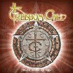

|
|
||
Freedom Call : The Circle of Life (2005) |
|

http://www.freedom-call.net |
1. Mother Earth 4:32 |
8.7/10 |
|
The Circle of Life es el cuarto disco de Freedom Call, grupo alemán que a estas alturas ya no necesita presentación y con tres buenos discos en su haber. "Mother Earth" empieza algo más guitarrero de lo esperable, aunque pronto los teclados nos devuelven al metal melodioso que firma la banda, que los coros no hacen sino reafirmar. "Carry on" es quizás el tema más pegadizo del álbum, con sus vibrantes coros y su directo estribillo. Un sonido un poco más oscuro soporta "The rythm of life", una canción progresiva, con sintetizadores de aire más artificial y ambiente algo más opresivo. La cuarta pista contiene a "Hunting high and low", que no es un cover del tema de Stratovarius ;-), una nueva muestra de metal melódico endulzado con los coros, pero lo bastante picante en el solo de guitarra. Los sintetizadores de estilo ochentero definen la siguiente pieza, "Starlight", seguramente el tema menos metalero y más edulcorado de todo el álbum. "The Gathering" es un breve, aunque pomposo, interludio instrumental que da paso a "Kings & queens", que sobre el doble bombo hilvana una base guitarrera bastante densa y otro de los memorables estribillos de la banda. En "Hero nation" disminuye el ritmo, pero a cambio aumenta la épica en los coros y no deja que decaiga la melodía en otro estribillo muy coreable. "High enough" es un tema más crudo que la media, apoyado en el doble bombo y acompañado por coros más directos. El arranque de "Starchild" nos ofrece más pompa y boato, que dejan sitio a otra canción rápida con uno más de los fantásticos estribillos del grupo. "The eternal flame" sigue por la misma senda, aunque a un ritmo algo más apacible, cargado de emocionantes coros y melodía a raudiales. Un arranque acústico introduce "The Circle of Life", una pieza con bastantes cambios de ritmo y de atmósfera y en conjunto interesante, aunque no espectacular. Otro muy buen disco de Freedom Call. Ojo, el disco empieza regular ("Mother Earth" y "The rythm of life" son quizás las canciones más flojas), pero en conjunto el resultado es bueno, aunque nada original, pero ¿quién habría esperado algo diferente, cuando lo que hay funciona? |
||
- Crítica escrita por Rubén Béjar - |
||